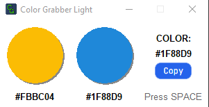

Color Grabber Light
A lightweight tool for precise on-screen color detection
Screenshot

How it works
Simply hover the cursor over any screen pixel and press the spacebar. The application will automatically:
- Determine the exact HEX code of the color
- Save the color to history
- Prepare it for copying to the clipboard
Download
Rating:
Version:
Compatibility:
Size:
Language:
License:
Installation:
Version:
Compatibility:
Size:
Language:
License:
Installation:

1.3
Windows 7, 10, 11
19 Mb
English
Free
Not required
The project is hosted on GitHub - the leading platform for open-source development with a community of millions. GitHub is the industry standard for IT.
Downloading files from official repositories is considered a safe practice, unlike questionable websites.
Who it's for
- Designers — for accurate color copying
- Developers — for working with palettes
- Artists — for selecting references
- All users — simplicity in 1 click
Thank you!
Thank you for using our applications!
We are happy to work for you.
If you would like to support the project development
— we would be very grateful.
You can do this by following the link below.
Thank you!